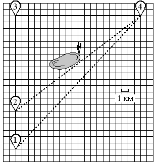

Шины
Участки
Листы
Печки
Квартиры
Тарифы
Маршруты
Саша летом отдыхает у дедушки в деревне Масловка. В субботу они собираются съездить на велосипедах в село Захарово в магазин. Из деревни Масловка в село Захарово можно проехать по прямой лесной дорожке.
Есть более длинный путь: по прямолинейному шоссе через деревню Весенка до деревни Полянка, где нужно повернуть под прямым углом направо на другое шоссе, ведущее в село Захарово. Есть и третий маршрут: в деревне Весенка можно свернуть на прямую тропинку в село Захарово, которая идёт мимо пруда.
Лесная дорожка и тропинка образуют с шоссе прямоугольные треугольники. По шоссе едут со скоростью 20 км/ч, а по лесной дорожке и тропинке — 15 км/ч. Сторона каждой клетки на плане равна 1 км.
